Structured, channel-level pruning of MobileNetV2's conv layers — speeds up inference on standard hardware, no sparse-matrix support needed.
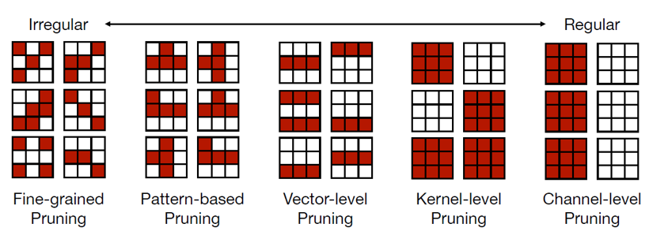
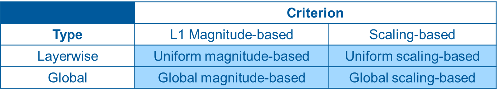
| Criterion | Idea |
|---|---|
| Magnitude-based | Rank by L1/L2 weight norm. |
| Scaling-based | Rank by batch-norm scale. |
| Type | Idea |
|---|---|
| Layer-wise | Every layer pruned by the same fixed ratio. |
| Global | One threshold from the ratio applied over all layers' pooled, sorted criterion values. |
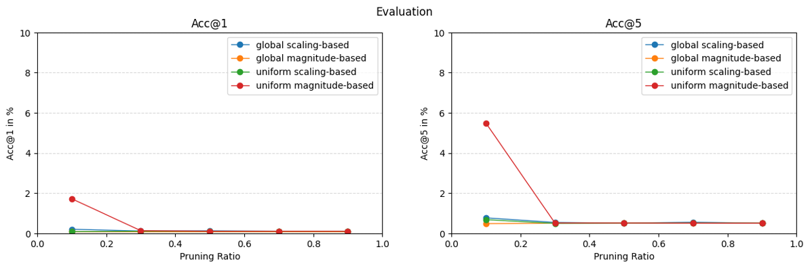
Every experiment shared a fixed training budget and configuration, so differences reflect the method, not training randomness:
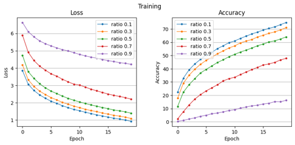
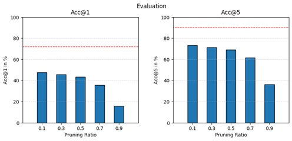
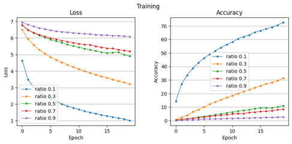
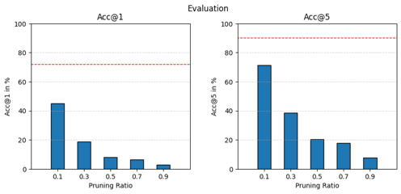
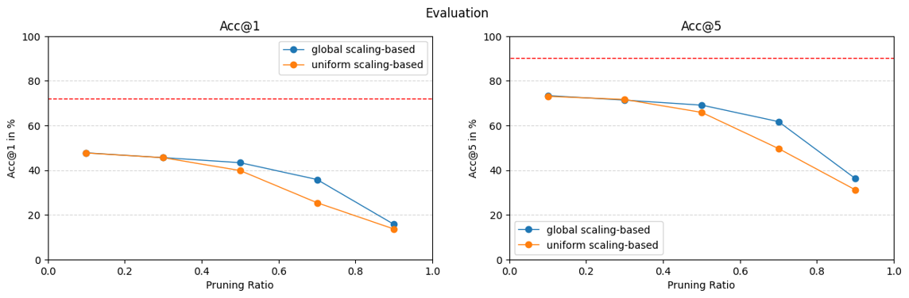
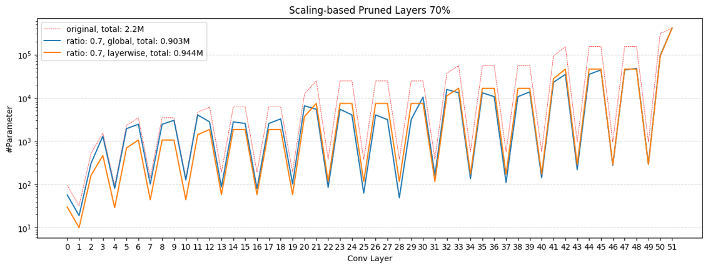
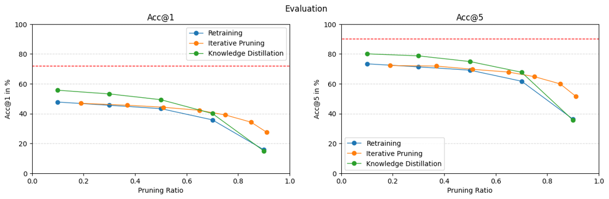
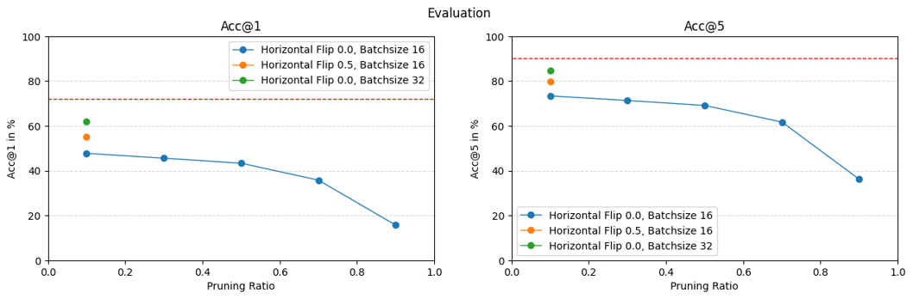
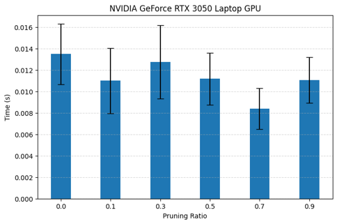
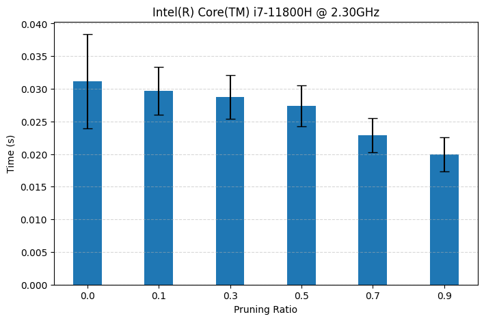